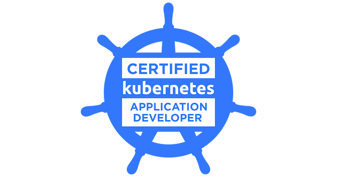

2023 — Present
DevOps Engineer
Digital Daya Teknologi
Maintained and developed cloud infrastructure and CI/CD pipelines for applications at Nobu Bank.
Improved script maintainability and deployment time by ~40%.
Automation is my answer to “what if I could just do everything myself?”
Hi, my name is Reynaldi Wong. You can call me Rey. I've always been a lazy person. And because of that, I constantly ask myself "What if I could just automate everything?" That mindset led me to study Mechatronics Engineering.
After graduating, I began working with microcontrollers and machines, using tools like Arduino, PLCs, and even Raspberry Pi. And then, somewhere along the way, I began working as a DevOps Engineer. That discovery changed my direction.
I feel that this line of work still stays close to what I love — automation, with the fact that I can do almost everything — while on the other side there are many limitations when you handle physical stuff. At least that's what I feel. If we talk about the details, I know it leans more toward being a Platform Engineer rather than a DevOps Engineer. 😂
I really enjoy working with Kubernetes, Docker, and Jenkins — how a deployment pipeline for a containerized application can be automated, and how you can make it faster by only tweaking your current scripts.
Currently I'm working as a DevOps Engineer at Digital Daya Teknologi, mainly focusing on improving the deployment pipeline for fintech applications.
“You should enjoy the little detours to the fullest. Because that's where you'll find things more important than what you want.” — HxH
Maintained and developed cloud infrastructure and CI/CD pipelines for applications at Nobu Bank.
Designed and provisioned on-premise infrastructure, including servers and networking, for data center.
Designed and provisioned on-premise infrastructure, including servers and networking, for data center.

Outside work, I'm a person of simple pleasures. I love to play video games. 🎮